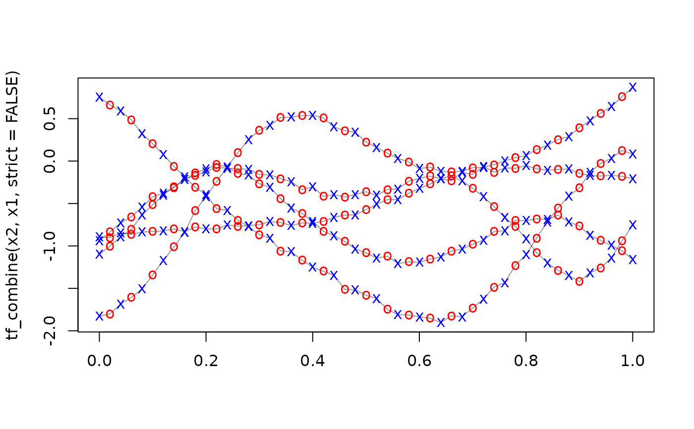

tf_split separates each function into a vector of functions defined on a sub-interval of
its domain, either with overlap at the cut points or without.
tf_combine joins functional fragments together to create longer (or more densely evaluated) functions.
Usage
tf_split(x, splits, include = c("both", "left", "right"))
tf_combine(..., strict = FALSE)Arguments
- x
a
tfobject.- splits
numeric vector containing
arg-values at which to split.- include
which of the end points defined by
splitsto include in each of the resulting split functions. Defaults to"both", other options are"left"or"right". See examples.- ...
tf-objects of identical lengths to combine- strict
only combine functions whose argument ranges do not overlap, are given in the correct order & contain no duplicate values at identical arguments? defaults to
FALSE. Ifstrict == FALSE, only the first function values at duplicate locations are used, the rest are discarded (with a warning).
Value
for tf_split: a list of tf objects.
for tf_combine: a tfd with the combined subfunctions on the union of the input tf_arg-values
Examples
x <- tfd(1:100, arg = 1:100)
tf_split(x, splits = c(20, 80))
#> [[1]]
#> tfd[1]: [1,20] -> [1,20] based on 20 evaluations each
#> interpolation by tf_approx_linear
#> [1]: ▁▁▁▂▂▃▃▃▄▄▅▅▆▆▆▇▇███
#>
#> [[2]]
#> tfd[1]: [20,80] -> [20,80] based on 61 evaluations each
#> interpolation by tf_approx_linear
#> [1]: ▁▁▁▂▂▂▂▃▃▃▄▄▄▅▅▅▆▆▆▆▇▇▇███
#>
#> [[3]]
#> tfd[1]: [80,100] -> [80,100] based on 21 evaluations each
#> interpolation by tf_approx_linear
#> [1]: ▁▁▁▂▂▂▃▃▄▄▄▅▅▆▆▆▇▇███
#>
tf_split(x, splits = c(20, 80), include = "left")
#> [[1]]
#> tfd[1]: [1,19.9] -> [1,19] based on 19 evaluations each
#> interpolation by tf_approx_linear
#> [1]: ▁▁▁▂▂▃▃▄▄▄▅▅▆▆▇▇███
#>
#> [[2]]
#> tfd[1]: [20,79.9] -> [20,79] based on 60 evaluations each
#> interpolation by tf_approx_linear
#> [1]: ▁▁▁▂▂▂▃▃▃▃▄▄▄▅▅▅▆▆▆▆▇▇▇███
#>
#> [[3]]
#> tfd[1]: [80,100] -> [80,100] based on 21 evaluations each
#> interpolation by tf_approx_linear
#> [1]: ▁▁▁▂▂▂▃▃▄▄▄▅▅▆▆▆▇▇███
#>
tf_split(x, splits = c(20, 80), include = "right")
#> [[1]]
#> tfd[1]: [1,20] -> [1,20] based on 20 evaluations each
#> interpolation by tf_approx_linear
#> [1]: ▁▁▁▂▂▃▃▃▄▄▅▅▆▆▆▇▇███
#>
#> [[2]]
#> tfd[1]: [20.1,80] -> [21,80] based on 60 evaluations each
#> interpolation by tf_approx_linear
#> [1]: ▁▁▁▂▂▂▃▃▃▃▄▄▄▅▅▅▆▆▆▆▇▇▇███
#>
#> [[3]]
#> tfd[1]: [80.1,100] -> [81,100] based on 20 evaluations each
#> interpolation by tf_approx_linear
#> [1]: ▁▁▁▂▂▃▃▃▄▄▅▅▆▆▆▇▇███
#>
x <- tf_rgp(5)
tfs <- tf_split(x, splits = c(.2, .6))
x2 <- tf_combine(tfs[[1]], tfs[[2]], tfs[[3]])
#> ! removing 10 duplicated points from input data.
# tf_combine(tfs[[1]], tfs[[2]], tfs[[3]], strict = TRUE) # errors out - duplicate values!
all.equal(x, x2)
#> [1] TRUE
# combine works for different input types:
tfs2_sparse <- tf_sparsify(tfs[[2]])
tfs3_spline <- tfb(tfs[[3]])
#> Warning: Sparse data: Spline interpolation may be unreliable/infeasible for functions
#> with fewer evaluations than basis functions, 5 of 5 entries affected.
#> → Check results and consider reducing `k` for spline interpolation.
#> ℹ Affected entries: 1, 2, 3, 4, and 5
#> Percentage of input data variability preserved in basis representation
#> (per functional observation, approximate):
#> Min. 1st Qu. Median Mean 3rd Qu. Max.
#> 98.60 99.80 99.90 99.66 100.00 100.00
tf_combine(tfs[[1]], tfs2_sparse, tfs3_spline)
#> ! removing 2 duplicated points from input data.
#> irregular tfd[5]: [0,1] -> [-2.270273,3.269579] based on 39 to 45 (mean: 42) evaluations each
#> interpolation by tf_approx_linear
#> 1: (0.00, -2.0);(0.02, -2.1);(0.04, -2.0); ...
#> 2: (0.00, -1.5);(0.02, -1.5);(0.04, -1.4); ...
#> 3: (0.00,-0.77);(0.02,-0.78);(0.04,-0.75); ...
#> 4: (0.00, 0.60);(0.02, 0.73);(0.04, 0.91); ...
#> 5: (0.00,-0.16);(0.02,-0.20);(0.04,-0.20); ...
# combine(.., strict = F) can be used to coalesce different measurements
# of the same process over different grids:
x1 <- tfd(x, arg = tf_arg(x)[seq(1, 51, by = 2)])
x2 <- tfd(x, arg = tf_arg(x)[seq(2, 50, by = 2)])
tf_combine(x2, x1, strict = FALSE) == x
#> 1 2 3 4 5
#> TRUE TRUE TRUE TRUE TRUE
plot(tf_combine(x2, x1, strict = FALSE))
points(x1, col = "blue", pch = "x")
points(x2, col = "red", pch = "o")
